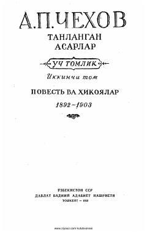

TAAnton Chexovning qissa va hikoyalardan iborat tanlangan asarlarining ikkinchi jildi.
Ushbu to'plam rus yozuvchisi Anton Chexovning qissa va hikoyalarini o'z ichiga olgan tanlangan asarlarining ikkinchi jildidir. Kitobda muallifning turli yillarda yozilgan badiiy asarlari o'rin olgan bo'lib, ular insoniy munosabatlar va jamiyatdagi turli xarakterlarni mohirona tasvirlaydi.